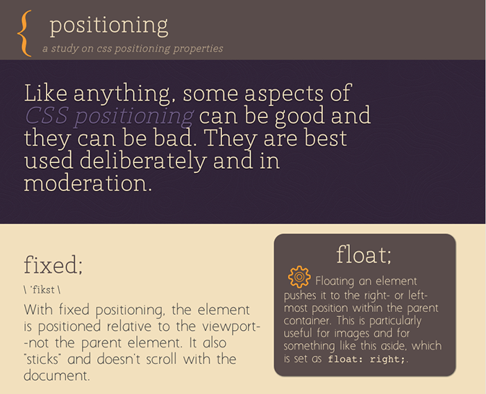

CSS Positioning is something I have mixed feelings about, as you might be able to tell from my most recent project. It's a powerful layout tool, allowing elements to interact with one another in ways that can improve the flow of your document.
Positioning, however, can be one of those things that, when done in excess, it makes your CSS into a minefield--it needs constant tweaking and you're always in fear of completely disrupting everything on your site. It's a maintenance nightmare.
So, in my project, I highlighted the best uses for each of the positioning properties and also used them sparingly, more to highlight information and give useful tips.
Click on the screenshot to see my project in action!
